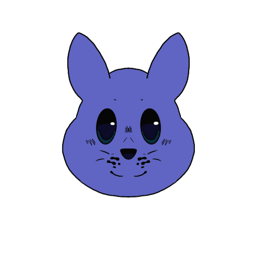
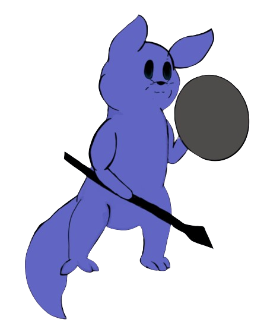

Squire


They/He
The Squire is ambitious and determined. They took up a dangerous role in their colony and an daunting task. He doesn't stop to think if he's taking on too much at once and crumbles hard once they're past their limit.
The Squire moved away from their colony to prove one more final test before he's officially knighted. They must venture away from the Shoreline that is his home to gather a special flower that may work as medicine to cure a disease that is spreading throughout the colony. The Squire suspects that there could be such a mysterious plant growing around this strange town.
The Squire was featured in Round 3, where he was a Janitor. He died instantly. L